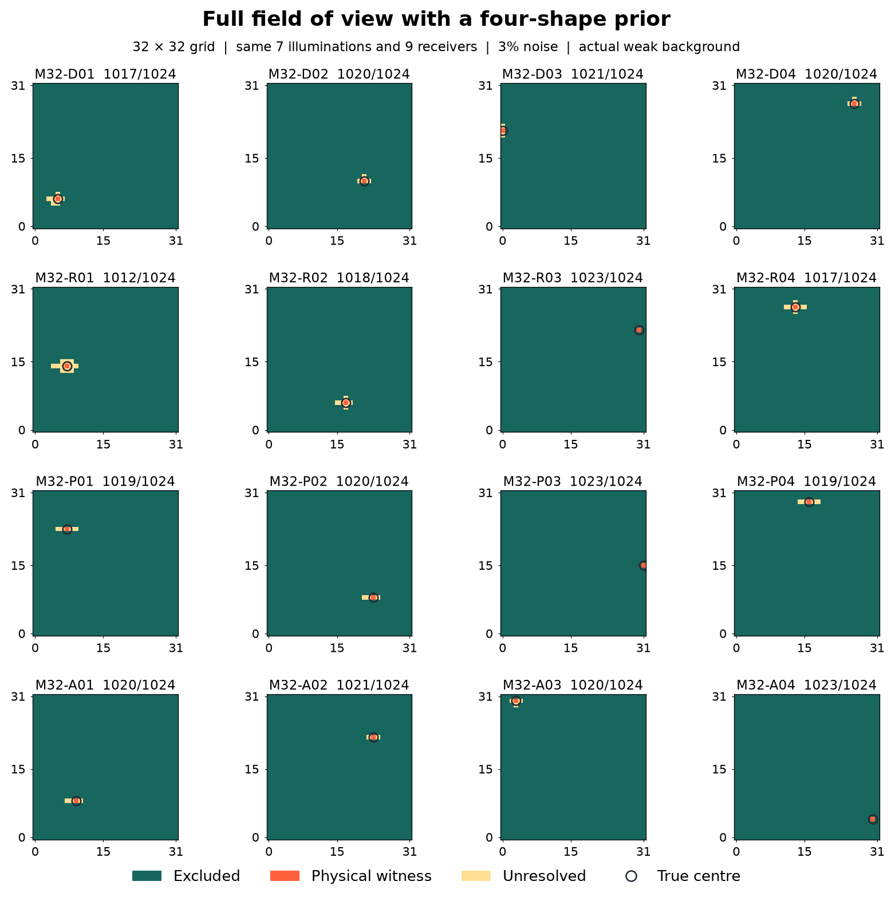
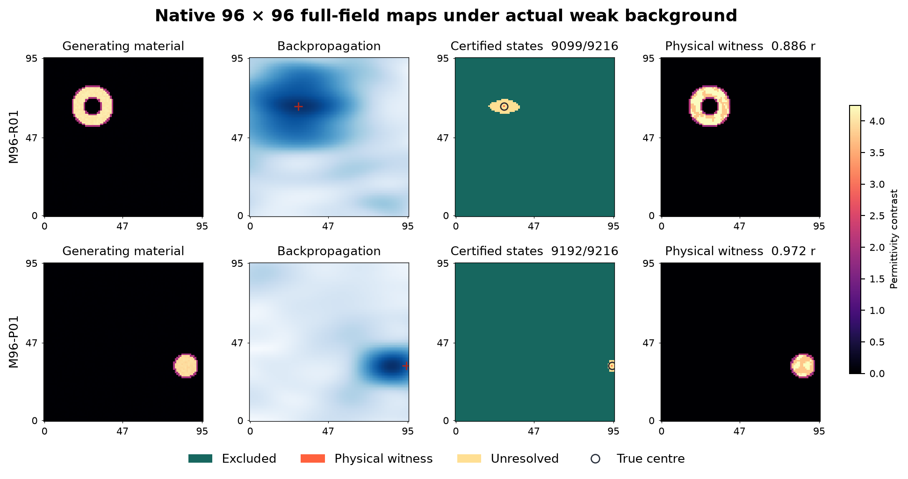
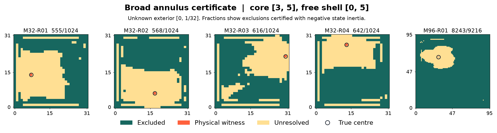
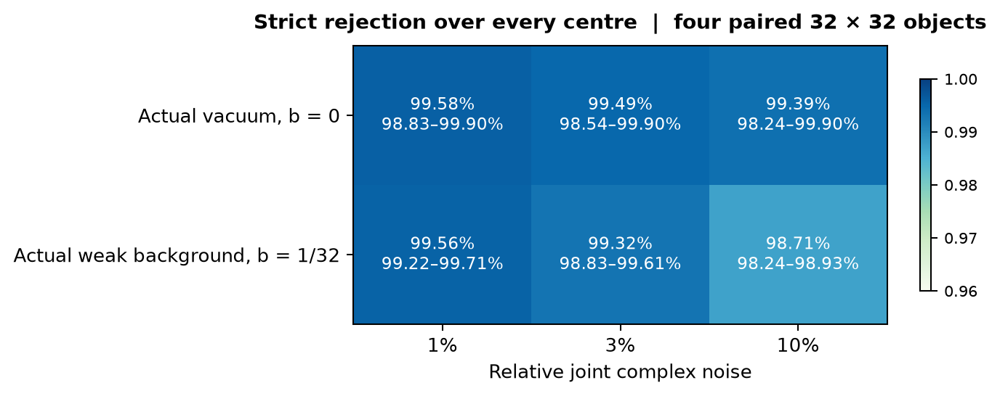

固定阵列弱背景下的全视场定位
400 MHz、2 m × 2 m、7 发 9 收。每个整数格中心都接受检验，边缘候选使用越界剪裁。允许各背景格独立落在 [0, 1/32] 时，两种网格上均获得全视场定位和通过全波复算的物理见证。
四形态库也可定位
16 件对象共享实盘、环、双夹杂和 Austria 型四种候选形态。检验逐一读入原始复数端口，按位置排除四类的并集。每个候选活动格独立满足轮廓加权的 [3.75, 4.25]。在 16 件对象上，48 个错误形态的整张图均被排除。

原生 96² 与同赛道对照

| 网格 | 背景合同 | 对象 | 严格排除 / 位置检查 | 物理见证 | 未决 | 真中心保留 | 方向性 Neumann 排除 |
|---|---|---|---|---|---|---|---|
| 32² | 实际真空，外部确知真空 | 16 | 16,349 / 16,384 | 16 | 19 | 16 | 16,301 |
| 32² | 实际真空，推断允许弱背景 | 16 | 16,335 / 16,384 | 16 | 33 | 16 | 0 |
| 32² | 实际弱背景，推断允许弱背景 | 16 | 16,313 / 16,384 | 16 | 55 | 16 | 0 |
| 96² | 实际真空，外部确知真空 | 2 | 18,321 / 18,432 | 2 | 109 | 2 | 16,993 |
| 96² | 实际真空，推断允许弱背景 | 2 | 18,308 / 18,432 | 2 | 122 | 2 | 0 |
| 96² | 实际弱背景，推断允许弱背景 | 2 | 18,291 / 18,432 | 2 | 139 | 2 | 0 |
实际弱背景下，方向性 Neumann 采用实方向一阶项和全域余项上包，未能通过耦合收缩条件。32² 的 OSM 峰命中 3/16 个中心，前五名含真中心 5/16。OSM 输出排序，三态证书输出对材料类的约束。
更宽的环允许类使用不定惯性
核心逐格允许 [3, 5]，自由壳层逐格允许 [0, 5]，背景仍逐格允许 [0, 1/32]。对照固定权重库仅保留正定状态。更宽的连续搜索与任意精度复核在 32² 单独找到至少一个该库遗漏的 PSD 排除。
| 对象 | 严格排除 | 获胜证书 ν > 0 | 固定权重库 PSD 排除 | 负指数范围 |
|---|---|---|---|---|
| M32-R01 | 555 / 1,024 | 555 | 0 | 3, 4, 5 |
| M32-R02 | 568 / 1,024 | 568 | 0 | 3, 4, 5 |
| M32-R03 | 616 / 1,024 | 616 | 0 | 3, 4, 5 |
| M32-R04 | 642 / 1,024 | 642 | 0 | 2, 3, 4, 5 |
| M96-R01 | 8,243 / 9,216 | 8,243 | 0 / 5184（内域） | 2, 3, 4, 5 |

同一批两件材料的 96²→32² 预测差为原始噪声半径的 5.27 倍和 2.26 倍。比较先对齐端口单位。 配对网格转移与阵列核验
改变联合复噪声
每件对象、每种实际背景固定同一复噪声方向，分别构造 1%、3%、10% 的读数。32² 对四件配对对象全域重做证书。原生用已有距离下界作严格的跨读数转移，结果保存在同一数据目录。
| 背景上限 | 噪声 | 严格排除 | 物理见证 | 配对对象 |
|---|---|---|---|---|
| 0.0 | 1% | 4,079 / 4,096 | 4 | 4 |
| 0.0 | 3% | 4,075 / 4,096 | 4 | 4 |
| 0.0 | 10% | 4,071 / 4,096 | 4 | 4 |
| 0.03125 | 1% | 4,078 / 4,096 | 4 | 4 |
| 0.03125 | 3% | 4,068 / 4,096 | 4 | 4 |
| 0.03125 | 10% | 4,043 / 4,096 | 4 | 4 |

位置确定后的幅度和单格峰值
存活幅度档是同一档位模板的等效系数范围。独立逐格峰值区间允许不同格跨档变化。全域任一单格高值的事件只标记已验算的见证，其余保留未决。
| 对象 | 存活幅度档包络 | 逐格独立峰值外界 | 见证峰值 | 全域低峰排除上限 |
|---|---|---|---|---|
| M32-A01 | [2.0, 5.0] | [2.5, 6.0] | 4.241 | 0.046875 |
| M32-A02 | [3.0, 5.0] | [2.5, 6.0] | 4.250 | 0.046875 |
| M32-A03 | [2.0, 5.0] | [2.5, 6.0] | 4.250 | 0.046875 |
| M32-A04 | [3.0, 6.0] | [3.0, 6.0] | 4.250 | 0.046875 |
| M32-P01 | [3.75, 5.0] | [3.0, 6.0] | 4.250 | 0.046875 |
| M32-P02 | [3.0, 5.0] | [2.5, 6.0] | 4.250 | 0.046875 |
| M32-P03 | [3.0, 6.0] | [2.5, 6.0] | 4.250 | 0.046875 |
| M32-P04 | [3.0, 5.0] | [2.5, 6.0] | 4.250 | 0.046875 |
| M32-R01 | [3.0, 5.0] | [2.5, 6.0] | 4.250 | 0.046875 |
| M32-R02 | [3.0, 5.0] | [2.5, 6.0] | 4.250 | 0.046875 |
| M32-R03 | [3.0, 5.0] | [3.0, 6.0] | 4.250 | 0.046875 |
| M32-R04 | [3.0, 5.0] | [2.5, 6.0] | 4.250 | 0.046875 |
| M32-D01 | [3.0, 5.0] | [2.5, 6.0] | 4.250 | 0.046875 |
| M32-D02 | [3.0, 5.0] | [3.0, 6.0] | 4.250 | 0.046875 |
| M32-D03 | [3.0, 5.0] | [2.5, 6.0] | 4.250 | 0.046875 |
| M32-D04 | [3.0, 5.0] | [2.5, 6.0] | 4.250 | 0.046875 |
| M96-P01 | [3.0, 6.0] | [2.5, 6.0] | 4.250 | 0.046875 |
| M96-R01 | [3.75, 5.0] | [3.0, 6.0] | 4.250 | 0.046875 |
实际计算费用
按同一形状、两种实际背景的批次计。状态和候选费用是总耗时的组成部分。原生早期批计算中止费用与新运行分账。详细数据见每种形态的 JSON。 中止和恢复费用
| 网格 | 形态 | 剪裁样式 | 观测数 | 设定 CPU 秒 | 状态 CPU 秒 | 候选 CPU 秒 | 总墙钟秒 |
|---|---|---|---|---|---|---|---|
| 32² | austria | 57 | 8 | 0.011 | 0.386 | 24.671 | 36.13 |
| 32² | double | 55 | 8 | 0.009 | 0.461 | 26.002 | 39.27 |
| 32² | ring | 81 | 8 | 0.011 | 0.920 | 28.778 | 45.63 |
| 32² | solid | 49 | 8 | 0.014 | 0.416 | 23.230 | 24.72 |
| 96² | double | 465 | 2 | 0.102 | 73.821 | 22.466 | 209.63 |
| 96² | ring | 625 | 2 | 0.090 | 165.398 | 29.484 | 381.36 |
数学约束与复现方法 · 冻结合同 · 原始观测索引 · 32² 任意精度独立回放